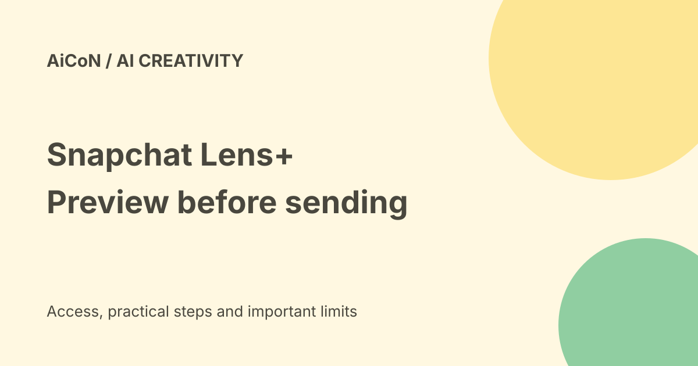

Snapchat Lens+ songs: paid access, steps and privacy limits
Snapchat Lens+ can turn a selected Chat message into a short song. You choose a genre, preview the result and decide whether to send it. It is a paid Lens+ feature, not part of a guaranteed free Snapchat allowance, and it may not appear in every Chat or account.

What is Chat to Song?
Snap announced new Lens+ tools on 21 September 2026, including turning messages into songs. Current support says the song uses words from the selected message. It is a creative transformation, not an accurate record of the original conversation's tone or a finished licensed music-production service.
You can select a message you sent or one a friend sent. Technical ability is not permission to expose a friend's private words to more people. Ask first if the message is personal, sensitive or was meant only for you.
Which subscription do you need?
The current support page requires Lens+ to generate songs. The launch calls Lens+ a tier within Snapchat+ with exclusive creative tools. Do not assume every ordinary Snapchat+ plan includes the same features.
The announcement describes rollout in Lens+ markets, with regional variation. No India-specific plan price, tax total, renewal terms or personal account eligibility was tested here. Check the in-app offer and actual feature access before subscribing for this single tool.
Current steps
- Open a Chat with a friend.
- Press and hold the message you want to use.
- Tap Generate Song in the action menu.
- Choose a genre and tap Generate Song to start.
- When ready, optionally choose album art and listen to the preview.
- Only if you want to share it, tap Send Sound.
The launch called the action Create Song; current support calls it Generate Song. Follow the actual app labels. Generation and sending are separate choices. Preview the complete audio before sending, especially names, personal details and words that could sound offensive out of context.
After sending and errors
The song appears as Chat media with the chosen artwork. Support says the person who generated it can forward it to other friends. Forwarding changes the audience, so get permission when it contains someone else's private message.
Generation can fail because of a safety check, a connection issue or a daily/rate limit. The help page describes an in-app retry route; it does not promise unlimited generations. Do not pay for repeated upgrades merely to bypass a safety restriction.
The preview has a long-press reporting flow. Received song media can also be reported through Snapchat's content-reporting tools.
Other tools in the release
The launch includes AI Photoshoot to change a photo, AI Remix for friends' Snaps and stickers, and AI fonts for captions. Edited photos may no longer reflect the original event. Avoid using them as evidence or pretending a changed expression is a real moment.
These are product descriptions, not hands-on quality tests. We did not open a subscriber account, create a song or send media.
What the privacy help actually says
Snap says text and images shared with generative features are used to produce responses. The checked guidance does not establish the exact processing location, private-Chat-song retention period or song-specific training terms. Do not turn those gaps into a promise that the feature runs only on your phone, or that every private Chat is used for training.
The help specifically says publicly posted images, videos, audio and text may be used to train and improve Snap's generative models, including automated and human review. This concerns public content such as Spotlight, Public Stories and Snap Map, not a blanket statement about every private message.
Public-content training control
Snap's documented route is Settings, Privacy Control, Manage My Information, then turn off the public-content generative-AI training setting. It says opting out affects future use, not training already completed. Other permitted processing may continue, and another user's public post containing you can still be processed.
Snap also warns against sharing sensitive information with AI and using other people's likeness without permission. Some generated images have a label or watermark; not every image does. No label is not proof that content is real.
Frequently asked questions
Is ordinary free Snapchat enough?
No. Song generation requires Lens+.
Does generating immediately send it?
The support flow includes a preview and a separate Send Sound step.
Is commercial reuse verified?
No. This guide does not grant download, distribution or commercial music rights.
What changed since the earlier post?
This guide follows current Generate Song support, adds testing and rate-limit caveats, separates preview from sending, and replaces broad privacy assumptions with what Snap actually documents.
Sources: Official release · Current Chat to Song steps · Generative AI and privacy controls. Checked 8 October 2026.